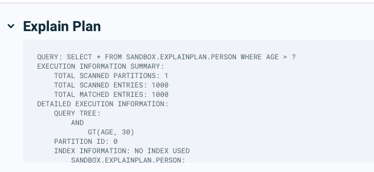
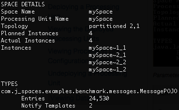
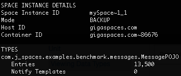

In the Space overview page, click a Space to drill down.
Within this page, the IT administrator or developer can review the Object Type properties and metrics.
At the top of the page, it is possible to review the Object Type name and data related to the number of entries, indexes, and Notify Contains generated by the Object Type. A summary of the information available is given below.
For each Object type, you can view the following properties at the bottom of the page:
| Parameter | Description |
|---|---|
| Number of entries | The Object Type data distribution between the deployed partitions of the service. It is possible to review the number of entries per partition and identify situations where the data partitioning is unbalanced. |
| Name | Name of the data object |
| Number of reads | The distribution of application reads to the Object Type and split between the deployed partitions |
| ID | Pointer to the primary key of the data type in the Space |
| Indexes | By clicking on the indexes tab, it is possible to review the list of indexes defined for the Object Type. Also shows used properties per each index and its type - e.g. regular, composite etc. |
| Routing | Pointer to the field that identifies the Space partition. |
| Notify containers | How many instances of this object type match a template in an event container. |
| SQL editor |
Press on the SQL Editor tab to see a SQL SELECT statement for the selected Object Type, in the example below, the Persons Object. Press Run Query. The results will appear in the Query Results table on the bottom of the page. The user can edit the query, for example: SELECT * FROM "com.mycompany.app.model.Persons" where personname LIKE '%Person 1%' LIMIT 10
|
In the Space overview page, click a Space to drill down.
Within this page, the IT administrator or developer can review the Object Type properties and metrics related to size, distribution per partition etc.
At the top of the page, it is possible to review the Object Type name and data related to the number of entries, indexes, and Notify Contains generated by the Object Type. A summary of the information available is given below.
| Parameter | Description |
|---|---|
| Name | Name of the data object |
| Number of entries | The Object Type data distribution between the deployed partitions of the service. It is possible to review the number of entries per partition and identify situations where the data partitioning is unbalanced. |
| Number of reads | The distribution of application reads to the Object Type and split between the deployed partitions |
| ID | Pointer to the primary key of the data type in the Space |
| Indexes | By clicking on the indexes tab, it is possible to review the list of indexes defined for the Object Type. Also shows used properties per each index and its type - e.g. regular, composite etc. |
| Routing | Pointer to the field that identifies the Space partition. |
| Notify containers | How many instances of this object type match a template in an event container. |
| SQL editor |
Press on the SQL Editor tab to see a SQL SELECT statement for the selected Object Type, in the example below, the Person Object. Press Run Query. The results will appear in the Query Results table on the bottom of the page. The user can edit the query, for example:
|
| Explain Plan |
The Explain Plan of a query can be viewed In the Ops Manager when running a query in the SQL Query Editor. The output of the query explain plan is shown in a collapsible view above the query results table. To enable the Explain Plan feature, begin the query with "EXPLAIN PLAN FOR ". Explain Plan is at Alpha feature level. It will be available as a fully supported feature in the next release. Running a query with an Explain Plan may impact the query performance.  |

In the Space overview page, click a Space to drill down.
Within this page, the IT administrator or developer can review the Object Type properties and metrics related to size, distribution per partition etc.
At the top of the page, it is possible to review the Object Type name and data related to the number of entries, indexes, and Notify Contains generated by the Object Type. A summary of the information available is given below.
| Parameter | Description |
|---|---|
| Name | Name of the data object |
| Entries | Number of entries for the object |
| RAM size | Total amount of RAM used by the object |
| ID | Pointer to the primary key of the data type in the Space |
| Indexes | Number of indexes defined for the Object Type |
| Routing | Pointer to the field that identifies the Space partition. |
| Notify containers | How many instances of this object type match a template in an event container. |
| SQL editor |
Press on the SQL Editor tab to see a SQL SELECT statement for the selected Object Type, in the example below, the Persons Object. Press Run Query. The results will appear in the Query Results table on the bottom of the page. An example query is as follows: SELECT * FROM "com.mycompany.app.model.Persons" LIMIT 10
This example query can be seen in the Ops Manager screen:
The user can edit the query, for example:
|
| Explain Plan |
The Explain Plan of a query can be viewed In the Ops Manager when running a query in the SQL Query Editor. The output of the query explain plan is shown in a collapsible view above the query results table. To enable the Explain Plan feature, begin the query with EXPLAIN SELECT * FROM "com.mycompany.app.model.Persons" LIMIT 10
Running a query with an Explain Plan may impact the query performance. |
Press on the SQL Editor tab to see a SQL SELECT statement for the selected Object Type.
Press Run Query. The results will appear in the Query Results table on the bottom of the page.
An example query is as follows:
SELECT * FROM "com.mycompany.app.model.Persons" LIMIT 10
This example query can be seen in the Ops Manager screen:

The user can edit the query, for example:
SELECT * FROM "com.mycompany.app.model.Persons" where personname LIKE '%Person 1%' LIMIT 10
The Explain Plan of a query can be viewed In the Ops Manager when running a query in the SQL Query Editor. The output of the query explain plan is shown in a collapsible view above the query results table.
To enable the Explain Plan feature, begin the query with EXPLAIN, for example:
EXPLAIN SELECT * FROM "com.mycompany.app.model.Persons" LIMIT 10
Running a query with an Explain Plan may impact the query performance.
In the Space overview page, click a Space to drill down.
Within this page, the IT administrator or developer can review the Object Type properties and metrics related to size, distribution per partition etc.
At the top of the page, it is possible to review the Object Type name and data related to the number of entries, indexes, and Notify Contains generated by the Object Type. A summary of the information available is given below.
| Parameter | Description |
|---|---|
| Name | Name of the data object |
| Number of entries | The Object Type data distribution between the deployed partitions of the service. It is possible to review the number of entries per partition and identify situations where the data partitioning is unbalanced. |
| Number of reads | The distribution of application reads to the Object Type and split between the deployed partitions |
| ID | Pointer to the primary key of the data type in the Space |
| Indexes | By clicking on the indexes tab, it is possible to review the list of indexes defined for the Object Type. Also shows used properties per each index and its type - e.g. regular, composite etc. |
| Routing | Pointer to the field that identifies the Space partition. |
| Notify containers | How many instances of this object type match a template in an event container. |
| SQL editor |
Press on the SQL Editor tab to see a SQL SELECT statement for the selected Object Type, in this example the Person Object. Press Run Query. The results will appear in the Query Results table on the bottom of the page. The user can edit the query. |
| SQL editor |
Press on the SQL Editor tab to see a SQL SELECT statement for the selected Object Type. The user can edit the query, for example:
|
| Explain Plan |
The Explain Plan of a query can be viewed In the Ops Manager when running a query in the SQL Query Editor. The output of the query explain plan is shown in a collapsible view above the query results table. To enable the Explain Plan feature, check the Run with Explain Plan check box. . Running a query with an Explain Plan may impact the query performance.
|
Space data details
Command:
xap space info --type-stats <name> or insightedge space info --type-stats <name>
Description:
This command shows data type information for the specified Space: Entry class, number of entries, notify templates.
Input Example:
Output Example:

Parameters and Options:
| Item | Name | Description |
|---|---|---|
| Parameter | <name> | Provide the name of the Space for which you want to see the data type details. |
Space instance data details
Command:
xap space info-instance --type-stats <instance ID> or insightedge space info-instance --type-stats <instance ID>
Description:
This command shows data type information for the specified Space instance: Entry class, number of entries, notify templates.
Input Example:
Output Example:

Parameters and Options:
| Item | Name | Description |
|---|---|---|
| Parameter | instance ID | Provide the instance ID of the Space instance for which you want to see the data type details. |
To view Space data types:
Path
GET /spaces/{id}/statistics/types
Description:
The data entries in the Space are listed.
Example Request:
curl -X GET --header 'Accept: application/json' 'http://localhost:8090/v2/spaces/alertSpace/statistics/types'
Example Response:
{
"java.lang.Object": {
"entries": 0,
"notifyTemplates": 0
}
}
Options:
| Option | Description | Required |
|---|---|---|
| space name | Provide the name of the Space for which you want to see the data type details. | Yes |
To view Space Instance data types:
Path
GET /spaces/{id}/instances/{instanceId}/statistics/types
Description:
The data entries in the Space instance are listed.
Example Request:
curl -X GET --header 'Accept: application/json' 'http://localhost:8090/v2/spaces/alertSpace/instances/alertSpace~1/statistics/types'
Example Response:
{
"java.lang.Object": {
"entries": 0,
"notifyTemplates": 0
}
}
Options:
| Option | Description | Required |
|---|---|---|
| space name | Provide the name of the Space. | Yes |
| instanceId | Provide the instance Id of the Space for which you want to see the data type details. | Yes |
- In the Spaces view, highlight the Space or Space instance where you want to see the data types.
- Display the Types pane in the lower area of the view.
-
You can view the following information per data type:
Item Description Data Type Name Name of the data type. Instances Count How many instances of this data type are currently in the Space. Templates Count How many instances of this data type match a template in an event container. Space ID Pointer to the primary key of the data type in the Space. Space Routing Pointer to the field that identifies the Space partition. Indexes Displays which fields of the data type are indexed. Additionally, when you drill through a data type, you can see the following additional information:
Item Description Member Name Name of the field in the data type. Member Type Type of field. Storage Type How the data type is stored (object, binary, or compressed). Indexes Index type for the member of the data type. -
To filter the data type table, type an alphanumeric value in the Filter box.
Refer to the GigaSpaces Management Center topics in the Administration section.
Refer to the Admin API topics in the Developer Guide.